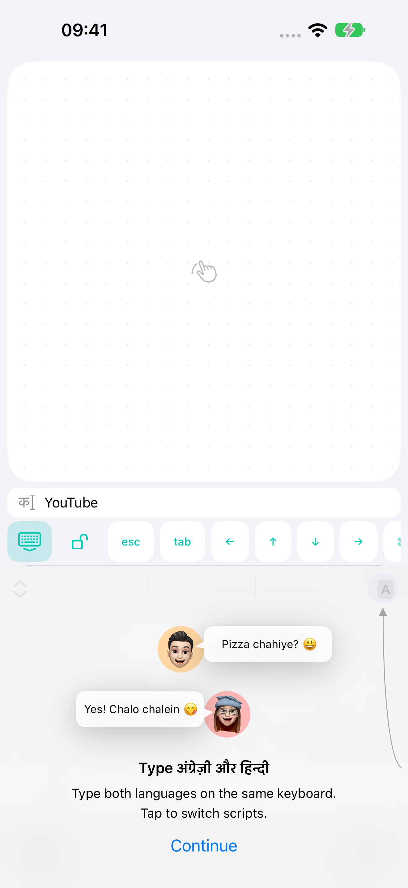

↖
माउस हमेशा साथ
एक उँगली से कर्सर चलाएँ, दो से स्क्रॉल करें। बायाँ, दायाँ और डबल क्लिक करें। बायाँ बटन दबाकर विंडो खिसकाएँ या उसका आकार बदलें।
फ़ोन से कर्सर चलाएँ, स्क्रॉल करें और लिखें। BridgeX iPhone या Android को कंप्यूटर से जोड़ता है। अभी Mac समर्थित है; Windows विकास में है।
मुफ़्त · iOS 17+ / Android 12+ · macOS 14+ · Windows विकास में
01Bluetooth या घर का Wi-Fi
02बिना इंटरनेट के नियंत्रण
03न खाता, न विज्ञापन
सोफ़े से। बिस्तर से। अपनी पसंदीदा कुर्सी से।
एक उँगली से कर्सर चलाएँ, दो से स्क्रॉल करें। बायाँ, दायाँ और डबल क्लिक करें। बायाँ बटन दबाकर विंडो खिसकाएँ या उसका आकार बदलें।
फ़ोन के कीबोर्ड के ऊपर टाइप किए टेक्स्ट का प्रीव्यू देखें। बड़े ट्रैकपैड को बनाए रखते हुए गलतियाँ सुधारें।
इनर्शिया के साथ स्क्रॉलिंग, Mission Control, डेस्कटॉप बदलना और समर्थित ऐप में पिंच करके ज़ूम करना।
Bluetooth LE बिना राउटर के काम करता है। घर पर Wi-Fi भी चुन सकते हैं। कमांड एन्क्रिप्ट होते हैं और किसी बाहरी सर्वर से नहीं गुजरते।

छोटी स्क्रीन। थोड़ी ज़्यादा सुविधा।
Mac पर खोज खोलें और फ़ोन से टाइप करें। कीबोर्ड के ऊपर शब्द जाँचें, गलती सुधारें और Return दबाएँ।
टैब के बटन, तीर, Escape, Tab, कॉपी और पेस्ट एक ही टूलबार में हैं। टाइप किया टेक्स्ट डिस्क पर सेव नहीं होता।
गोपनीयता कैसे काम करती है ↗बस एक बार सेटअप करें
Mac का सहयोगी ऐप इंस्टॉल करें और System Settings → Privacy & Security → Accessibility में नियंत्रण की अनुमति दें।
दोनों डिवाइस पर Bluetooth चालू करें या उन्हें घर के एक ही नेटवर्क से जोड़ें।
कंप्यूटर के BridgeX में QR कोड दिखाएँ, फिर iPhone या Android पर PC/Mac कनेक्ट करें दबाएँ। अभी Mac समर्थित है; Windows की योजना है।
कनेक्ट करने से पहले
Mac नियंत्रित करने के लिए नहीं। Bluetooth सीधे जुड़ता है और Wi-Fi घर के नेटवर्क में काम करता है। ऐप पहली बार डाउनलोड करने के लिए इंटरनेट चाहिए।
मुफ़्त BridgeX Mac ऐप। यह फ़ोन की कमांड लेकर आपके साइन-इन किए हुए सत्र में चलाता है। macOS 14 या नया संस्करण चाहिए।
Mac चालू हो, उपयोगकर्ता साइन इन हो और BridgeX चल रहा हो। Mac को जगाना या लॉगिन से पहले नियंत्रित करना समर्थित नहीं है।
नहीं। QR कोड से डिवाइस पेयर करें। डेवलपर को आपका टाइप किया टेक्स्ट या नियंत्रण का इतिहास नहीं मिलता।
हाँ। पहला संस्करण मुफ़्त है। कोई इन-ऐप खरीदारी, सदस्यता या विज्ञापन नहीं है।
BridgeX मानक कीबोर्ड शॉर्टकट से स्क्रॉलिंग, पिंच ज़ूम और सिस्टम जेस्चर चलाता है। व्यवहार ऐप और Mac की सेटिंग पर निर्भर करता है। लगातार हार्डवेयर ज़ूम और Force Touch की नकल नहीं की जाती।
BRIDGEX अपडेट इतिहास
Mac 1.0.1 (21)
Android 0.1.15 (16)
Android 0.1.14 (15)